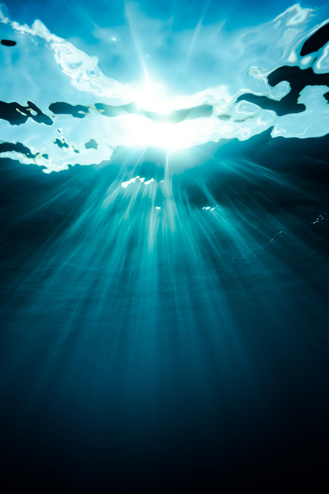

PELO OCEANO. EM COMUNIDADE.
O mar é de todos.
O cuidado também.
Um olhar atento pode fazer a diferença. Conectamos pessoas que querem observar, registrar e dar visibilidade à poluição marinha.
Pequenas atitudes. Um oceano de possibilidades.
Um projeto conectado à ODS 14
UM OLHAR SOBRE O LITORAL
O que a comunidade observa.
Acompanhe as ocorrências recentes.
Todo registro começa com alguém que se importa.
DO SEU OLHAR PARA O COLETIVO
Cuidar começa com perceber.
-
01
Entender os padrões
Observações repetidas revelam onde os resíduos se acumulam e como sua presença varia ao longo do tempo. Assim, um episódio isolado ganha contexto.
-
02
Orientar o cuidado
Conhecer os tipos de resíduos e os locais mais afetados ajuda a direcionar ações de prevenção e limpeza para onde elas são mais necessárias.
-
03
Acompanhar as mudanças
Comparar registros feitos com critérios consistentes permite avaliar resultados e perceber se a poluição diminui ou se novas ações são necessárias.
SUA OBSERVAÇÃO IMPORTA
Viu algo?
Vamos registrar.
Compartilhe uma ocorrência de poluição marinha e ajude a ampliar o cuidado com o litoral.
VIDA NA ÁGUA, CUIDADO EM TERRA